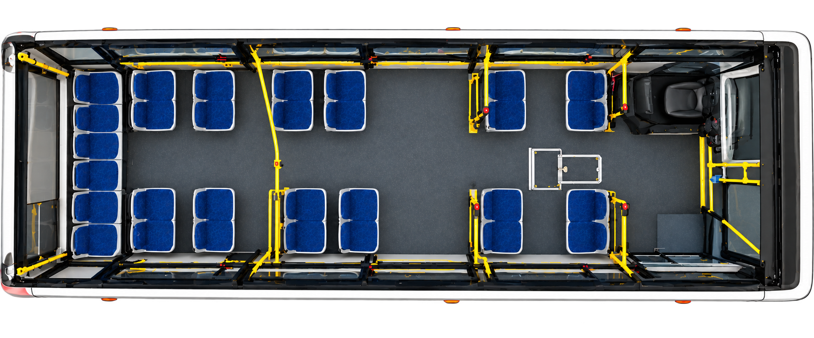
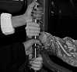

ЛИСТАЙ ВНИЗ
Выбери
место
АВТОБУС

ВЫБОР МЕСТА
Нажми на любое синее сиденье, чтобы узнать, что тебя ждёт в поездке.

Нажми на любое синее сиденье, чтобы узнать, что тебя ждёт в поездке.
Мы выбираем не просто свободное место, а определённую дистанцию между собой и окружающими.
Иногда нам хочется сесть у окна, чтобы смотреть на улицу и не вступать в контакт с другими пассажирами. Иногда мы выбираем место у выхода, чтобы быстро покинуть автобус. А иногда садимся рядом с незнакомцем, потому что свободных мест почти не осталось.
На наш выбор влияют не только удобство и личные предпочтения, но и присутствие других людей, расположение багажа, количество свободных мест и даже направление взгляда.

В общественном транспорте личное пространство становится особенно заметным. Здесь приходится делить ограниченную территорию с незнакомцами, постоянно подстраиваясь под обстоятельства. Даже небольшое расстояние между пассажирами может влиять на ощущение комфорта, свободы и безопасности.Получается, что выбор места в автобусе — это не такое простое действие, как кажется на первый взгляд. За ним скрываются негласные правила, которые мы соблюдаем, даже не задумываясь об этом.
Передвинь свою точку в автобусе. Потом переключи обстоятельства, не меняя расстояние, и посмотри, как меняется смысл близости.
Вокруг полно свободных мест. Если незнакомец подходит слишком близко, ты можешь задуматься: почему он выбрал именно это место?
Попробуй оставить точку на том же месте и сменить обстоятельства. Ощущения индивидуальны — здесь нет единственно правильной дистанции.
Четыре случайных попутчика. Выбирай соседа и узнай рейтинг комфорта своей поездки.
Почему в пустом автобусе нам кажется странным, когда незнакомец садится вплотную, а в переполненном мы спокойно стоим плечом к плечу? Физическое расстояние между людьми может быть одинаковым, но воспринимается совершенно по-разному.
Дело в том, что мы оцениваем не только близость другого человека, но и ситуацию, в которой оказались.
Социолог Эрвинг Гофман предложил теорию фреймов — способов, с помощью которых люди распознают и интерпретируют происходящее. Фрейм помогает ответить на вопрос: «Что здесь происходит?» Именно от ответа зависит, какое поведение мы считаем уместным, а какое — нарушением негласных правил.
Например, человек занимает соседнее сиденье своей сумкой. В полупустом автобусе это может восприниматься как обычное желание расположиться поудобнее. Но когда свободных мест больше нет, тот же жест приобретает другой смысл: пассажир словно заявляет, что его вещи важнее чужого права сесть. Само действие не изменилось, изменился контекст.
Листай вниз: сначала незнакомец подходит ближе, потом ты пытаешься отодвинуться, но он продолжает приближаться.
Между вами достаточно пространства. Присутствие другого человека почти не ощущается.
Даже если всю дорогу ни с кем не разговаривал. В автобусе мы договариваемся без слов — взглядами, жестами и расстоянием.